- Who I am!
- A Brief history of Spark
- Grapes of Spark
- The Metamorphosis
- Brave New PySpark
- To Kill a Mocking Bear
- Pride and Production
- Sense and Scalability
- A Song of Scala and Python
- The Finkler Questions
- The Sense of an Ending
* [Data Engineer]() by day
* [Data Scientist]() by night
* [Data Geek](), all day long
* Natural habitat: [KI labs](https://www.ki-labs.com)
* MSc Computer Science, [TU München](https://www.in.tum.de/en/cover-page/)
* Software Engineer, [Oracle Financial Services Software](https://www.oracle.com/in/industries/financial-services/), Bangalore
##### . ###
##### . ###
#### [MapReduce and Recycle]() ####
* [Slow]() - Disk based access
* [Cumbersome programming]() - More lines of code
* [Abstractions-less]() - Default
* [Batch processing]() - Nothing more
* [Built-in Interactive mode]() - Not available
* [Support]()- Java, Python (verbose)
* [Unified analytics engine]()
* [Matei Zaharia]()
* [AMPLab](), UC Berkeley
* [October 2012](), Spark v0.6.0
* [June 2013](), Apache Incubator
* [Fast]() - Processing in-memory
* [Concise]() - Lesser lines of code
* [Special Abstractions]() - RDDs ++
* [Stream and batch processing]()
* [Built-in Interactive mode]()
* [Support]()- Java, Scala, Python & R
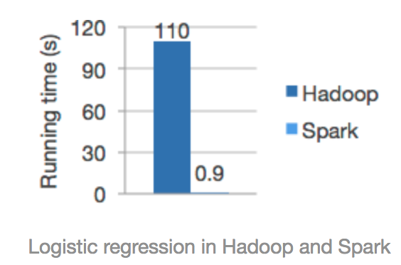
#### [Faster processing]() ####
* [Stream and batch processing]()
* [In-memory]() processing
* [DAG]() - Non-linear flow
* [Lazy Evaluation]()
* [Calcite]() - Query optimiser
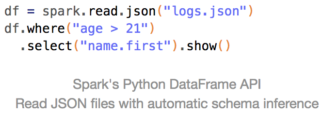
#### [Ease of Use]() ####
* [Concise]() - Less lines of code
* [Support]() - Java, Scala, Python & R
* [80]() high-level operators
* [Built-in Interactive mode]()
* [Numerous projects]() atop Spark
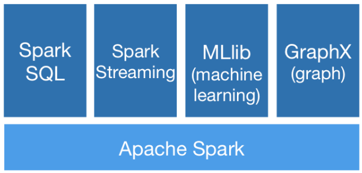
#### [Diversity]() ####
* [Leverages]() multiple libraries
* [Spark SQL]() - SQL-styled processing
* [Spark Streaming]() - streaming data
* [MLlib]() - Machine Learning
* [GraphX and GraphFrames]() - Graphs
* [BlinkDB/Tachyon]() - Fast SQL Analytics
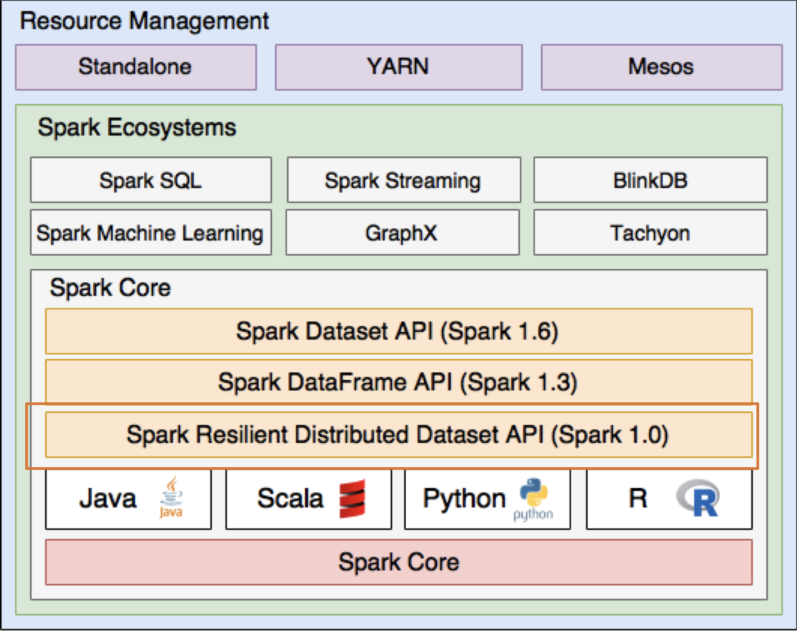
##### [Resilient Distributed Datasets]() #####
* [Primary]() abstraction in Spark
* [Created/Transformed]() - File or RDDs
* [Immutable]() - Read-only
* [Partitioned]() - Across nodes
* [Distributed]() - Parallel processing
* [Fault-tolerant]() - Lineage
* [Object collections]() - Java, Scala
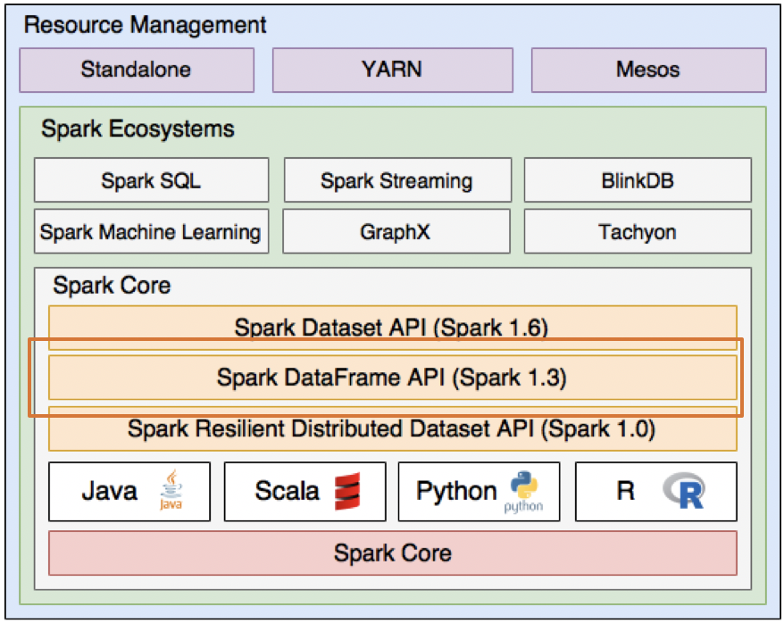
##### [DataFrames]() #####
* [Inspired]() by DFs in R/Python
* [Relational]() - Table structure
* [Named]() - Columns
* [Schema]() - Defined by a schema
* [SQL]() - API, build query plans
* [Catalyst]() - Query optimiser
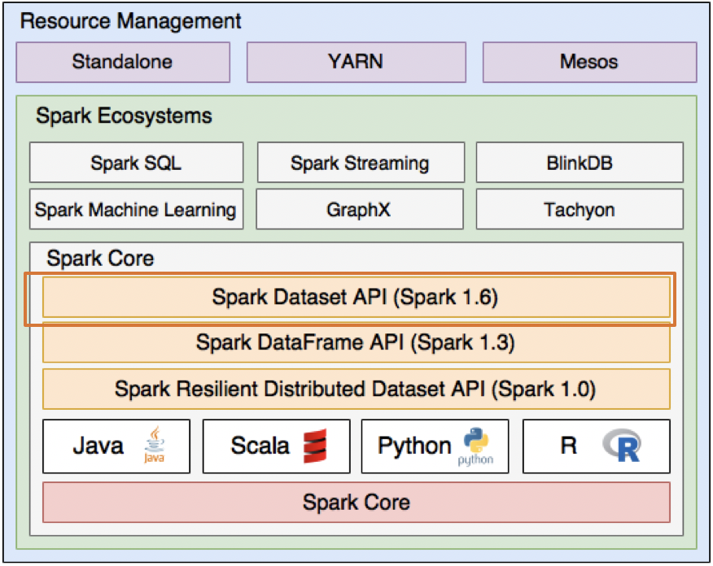
##### [Datasets]() #####
* [Best features]() of RDDs and DFs
* [Unnamed]() - Columns
* [Schema-less]() - No schema
* [Non-relational]() - No table
* [Type safe]() - Compile-time type safety
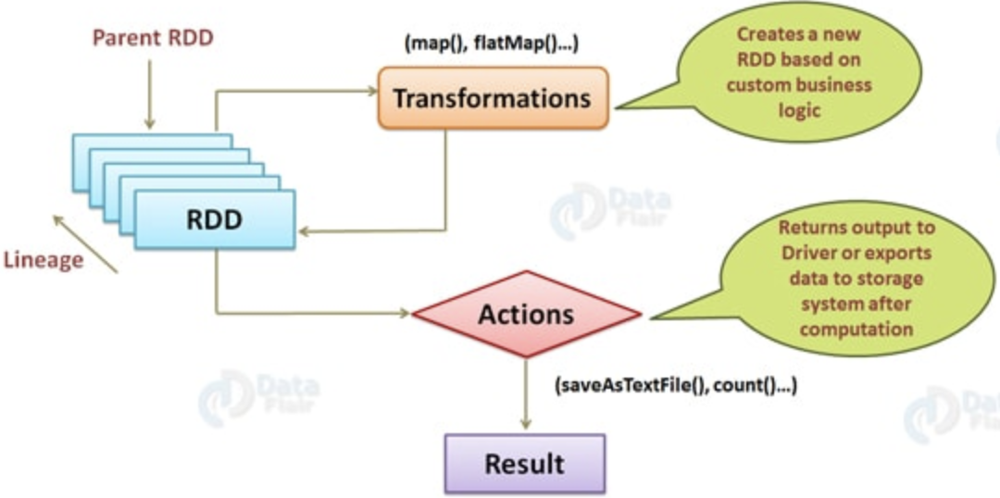
##### [Transformations]() #####
* [Operates]() on RDDs and DFs
* [Creates]() - new RDDs
* [RDD Lineage]() - a DAG
* [Lazy Evaluation]() - Not immediate
* map, filter, groupBy, sortBy
* union, intersection, distinct
##### [Actions]() #####
* [Operates]() on RDDs and DFs
* [Functions]() - applied on RDDs
* [Triggered]() - No new RDDs
* [Lazy Evaluation]() - Initiator
* count, reduce, collect, aggregate
* first, take, sum
Option 1: Download Tar release
wget https://www.apache.org/spark-2.4.0/spark-2.4.0-bin-hadoop2.7.tgz
tar -xzf spark-2.4.0-bin-hadoop2.7.tgz
PATH="$PATH:$(pwd)/spark-2.4.0-bin-hadoop2.7/bin
Option 2: Using Brew on MacOS
brew install apache-spark
Option 3: Using PyPi
pip install pyspark
Option 4: Using Conda
conda install -c conda-forge pyspark=2.3.1
Configure and Start
## Running PySpark in cluster mode inside Jupyter
## Include additional python modules
IPYTHON_OPTS="notebook" pyspark \
--master spark://localhost:7077 \
--executor-memory 7g \
--py-files tensorflow-py2.7.egg
Pandas Dataframe
df = pd.read_csv("world_rankings.csv")
PySpark Dataframe
df = sql.context.read.format('com.databricks.spark.csv')\
.options(header='true', inferschema='true')\
.load("world_rankings.csv")
Pandas Dataframe
df
df.head(10)
PySpark Dataframe
df
df.show(10)
Pandas Dataframe
df.columns
df.dtypes
PySpark Dataframe
df.columns
df.dtypes
Pandas Dataframe
df.drop('column1', axis=1)
PySpark Dataframe
df.drop('column1')
Pandas Dataframe
df.fillna(0)
PySpark Dataframe
df.fillna(0)
Pandas Dataframe
df.groupby(['column1', 'column2']) \
.agg({"column3": "mean", "column4": "min"})
PySpark Dataframe
df.groupby(['column1', 'column2']) \
.agg({"column3": "mean", "column4": "min"})
Pandas Dataframe
left.merge(right, on='key')
left.merge(right, left_on='column1', right_on='column2')
PySpark Dataframe
left.join(right, on='key')
left.join(right, left.column1 == right.column2
Pandas Dataframe
df.describe()
PySpark Dataframe
df.describe().show()
Pandas Dataframe
df.columns = ['C1', 'C2', 'C3']
df.rename(columns = {"C1": "c1", "C2": "c2", "C3": "c3"})
PySpark Dataframe
df.toDF('C1', 'C2', 'C3')
df.withColumnRenamed('C1', 'c1')
Pandas Dataframe
df[(df.column1 < 10) && (df.column2 == 100)]
PySpark Dataframe
df.filter((df.column1 < 10) && (df.column2 == 100))
Pandas Dataframe
df[df.column] = 1 / df.column
PySpark Dataframe
df.withColumn('df.column', 1 / df.column)
Pandas Dataframe
import numpy as np
df['log_values'] = np.log(df.values)
PySpark Dataframe
import pyspark.sql.functions as F
df.withColumn('log_values', F.log(df.values))
Pandas Dataframe
df['conditional'] = df.apply(lambda x: 1 if x.column1 > 20
else 10 if x.column2 == 100 else 42, axis=1)
PySpark Dataframe
import pyspark.sql.functions as F
df.withColumn('conditional', \
F.when(df.column1 > 20, 1) \
.when(df.column2 == 100, 10) \
.otherwise(42))
Pandas Dataframe
pd.pivot_table(df, values='column4', \
index=['column1', 'column2'], columns=['column3], \
aggfunc=np.sum)
PySpark Dataframe
df.groupBy("column1", "column2").pivot("column3").sum("column4")
Pandas Dataframe
df.hist()
PySpark Dataframe
df.sample(False, 0.1).toPandas().hist()
Pandas Dataframe
Not Applicable
PySpark Dataframe
df.createOrReplaceTempView('TempTable')
df_query = spark.sql('select * from TempTable')
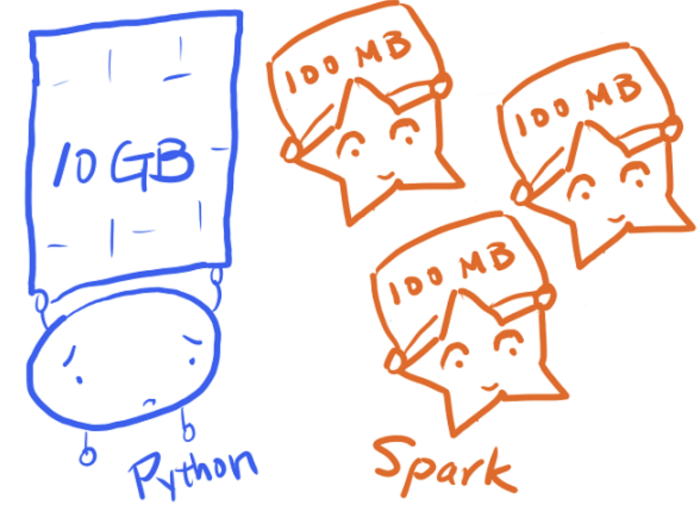
##### [Python functions in Spark]() #####
* [Iterate]() through complete data
* [Row-by-row]() access too slow
* [Distributed]() chunks of data
* [Production]() environment
* [Conventional]() functions don't suffice
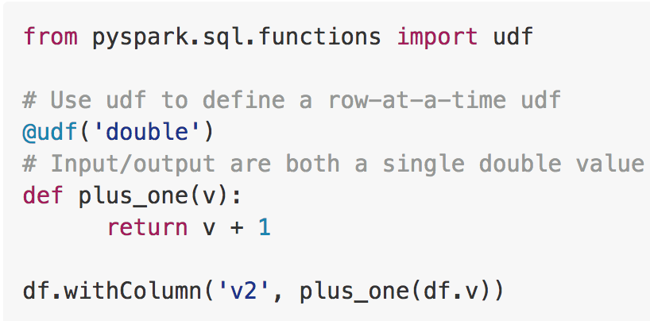
##### [PySpark UDFs (Row-at-a-time UDFs)]() #####
* [Primitive]() way of using Python functions
* [map()]() and [apply()]()
* [Output data type]() must be specified
* [Series/Scalar]() operations only
* [Row-by-row]() access too slow
* [Non-vectorized]() ser/deser
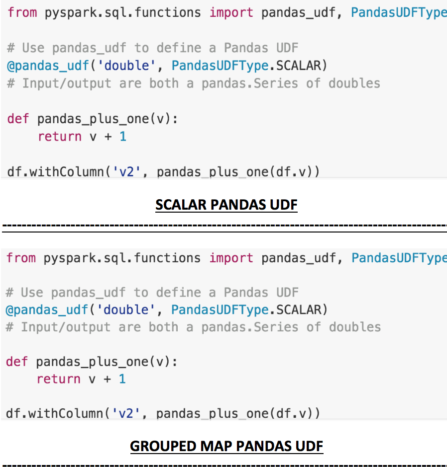
##### [Pandas UDFs (Vectorized UDFs)]() #####
* [Optimised]() way for Python functions
* [Supports]() Pandas and Scikit
* [Apache Arrow]() based
* [Vectorized]() ser/deser
* [Output data type]() must be specified
* [PandasUDFType]() must be specified
* [DataFrame Schema]() must be specified
* [Scalar]() and [Grouped Map]() operations
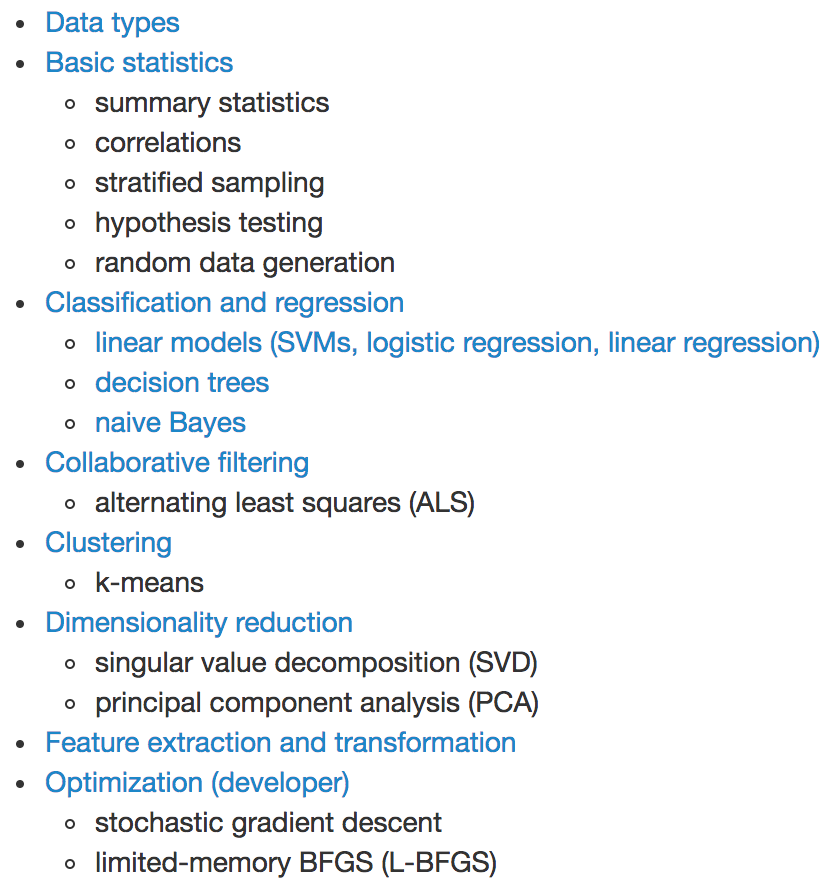
##### [DBSCAN on Spark]() #####
* [Stay Points]() detection
* [Telematics]() data from trucks
* [Spark MLlib]() does not offer [DBSCAN]()
* [Density-Based Spatial Clustering]()
* [O(n^2)]() Complexity
* [Implementations]() exist
* [Non-performant]() and with bugs
* [Scikit]() required
* [ELKI]() - [O(nlogn)]() - [JAVA]()
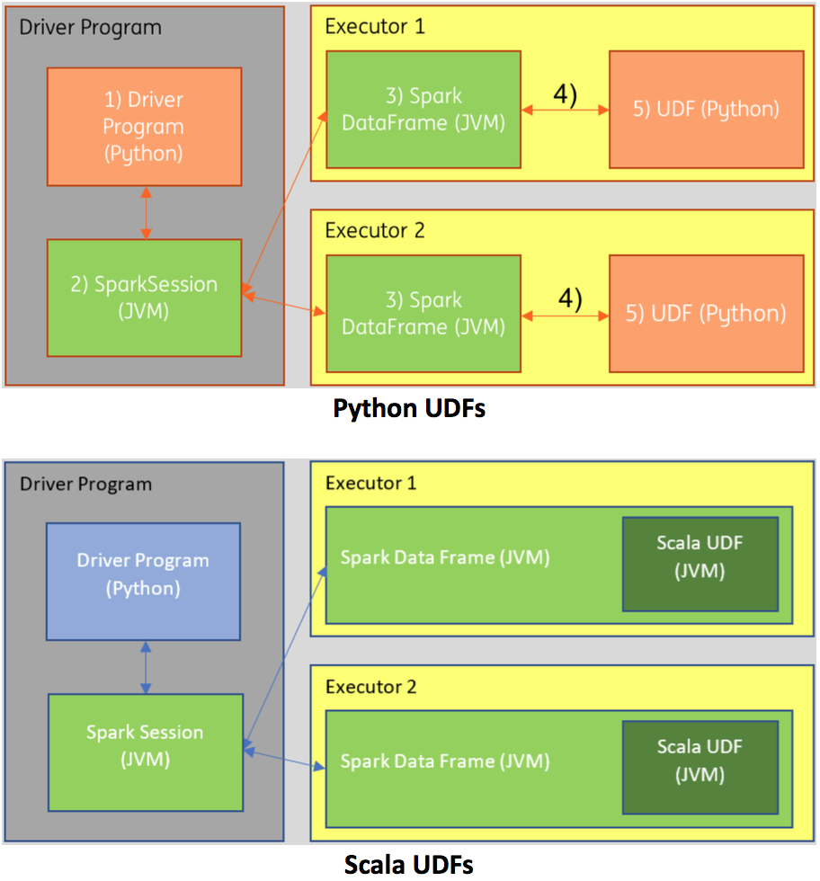
##### [Scala UDFs]() #####
* [Driver]() in native Python
* [Non-native JVM]() objects
* [2x Ser/Deser]() required
* [Scala UDFs]() best approach
* [Spark v2.1]()
* [JVM]() only scope
* [Unnecessary Ser/Deser]() avoided
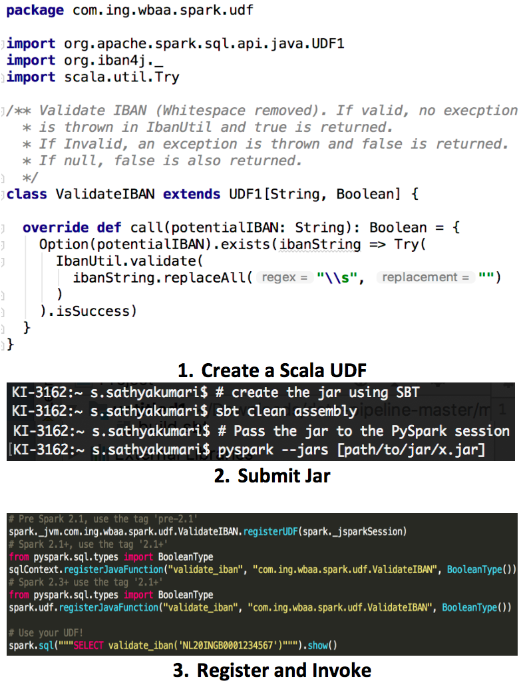
##### [Scala UDFs]() #####
* [Create Scala UDF]() as Scala project
* [Build JAR]() using SBT
* [Submit JAR]() to the PySpark session
* [Register]() the Scala UDF
* [JVM]() only scope
* [Ser/Deser]() completely avoided
##### [Patch-22]() #####
* [High]() Python expertise
* [Spark MLlib]() not mature enough
* [Pandas and Scikit]() required
* [Blackbox behaviour]() of UDFs
* [High-level column based]() functions are better
* [Ser-Deser]() minimised